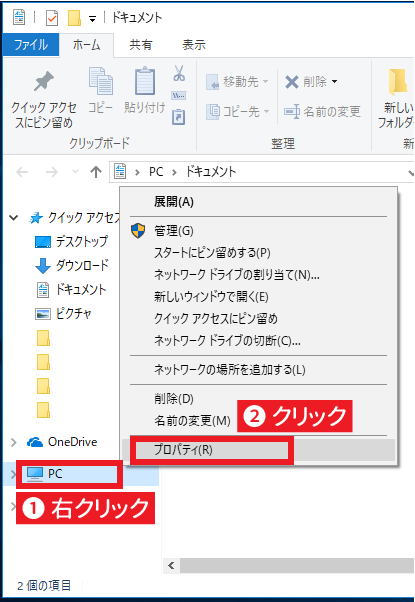
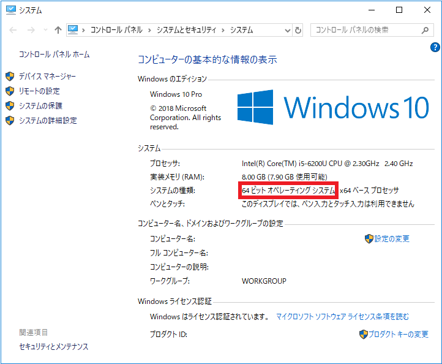

このページでは、お使いの Windows が 32bit 版であるか、 64bit 版であるかを確認する方法を紹介します。
1. 何らかのフォルダを開く
どこでも良いので、フォルダを開きます。左側に表示される「PC」あるいは「コンピューター」を右クリックし、「プロパティ」をクリックします。
2. 表示を確認する
ここで「32 ビット オペレーティングシステム」と表示されていれば 32bit 版、「64 ビット オペレーティングシステム」と表示されていれば 64bit 版です。確認が終わったらこの画面を閉じて構いません。